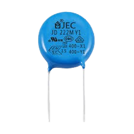
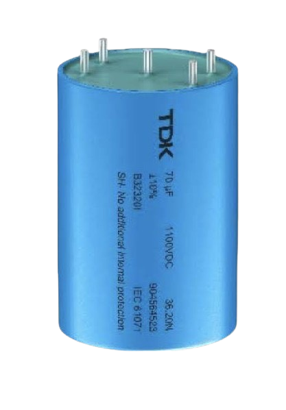
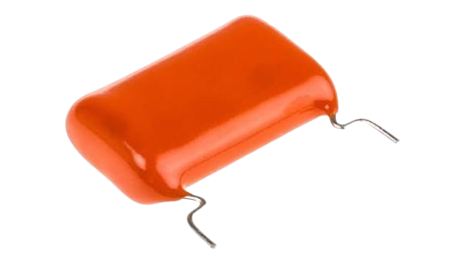
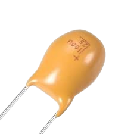

Les Condensateurs
C'est quoi
Un condensateur est un composant électronique qui stocker de l'électricité
temporairement, comme une petite batterie rechargable très rapide.
Schéma électronique
──||──
Les deux barres || reprèsentent les deux plaques du condensateur
Comment ça marche ?
Strucuture : Deux plaques de métal séparées par un isolant
Principe :
- On applique une tension → les électrons s'accumulent sur une plaque
- L'autre plaque se vide d'électrons → elle devient positive
- Le condensateur garde cette charge
- Il peut redonner l'électricité rapidement
Les différents types
-
🟢 Condensateur Céramique

💡 Pourquoi on l'utilise : Très rapide et très petit
🎯 Utilisations :
- Smartphones et tablettes
- Ordinateurs
- Radios et circuits électroniques
- Filtrage des signaux rapides
-
🔵 Condensateur Electrolytique

💡 Pourquoi on l'utilise : Stocke beaucoup d'énergie
🎯 Utilisations :
- Alimentation électronique
- Écrans et télévisions
- Amplificateurs audio
- Éclairage LED
-
🟠 Condensateur Film Plastique

💡 Pourquoi on l'utilise : Son très pur et faible
🎯 Utilisations :
- Chaînes Hi-Fi
- Amplificateurs de guitare
- Équipements audio professionnels
- Enceintes (filtres)
-
🟣 Condensateur Tantale

💡 Pourquoi on l'utilise : Ultra fiable et ne tombe jamais en panne
🎯 Utilisations :
- Satellites et fusées
- Processeurs d'ordinateurs
- Matériel médical
- Avions (avionique)
⚠️ Attention : Les condensateurs peuvent garder leur électricité même quand l'appareil est éteint ! Toujours faire attention.